ONE-LINE
CONCLUSION
CONCLUSION
정리는 인턴이 하고, 보내는 건 내가 합니다. [1]
역할 · 규칙 · 할 일. 이 세 줄 공식에 "절대 혼자 보내지 마" 한 줄을 넣으면 어떤 봇에게든 안전하게 첫 업무를 줄 수 있습니다.
출연은 채널 진행자 1인 (이름 영상에서 확인 불가)입니다. [1]
역할 / 규칙(초안만, 혼자 보내거나 게시 금지) / 할 일.
커뮤니티 디렉토리에서 봇을 찾되, 제3자가 만든 봇인지 설명을 먼저 읽습니다.
"매일 아침 8시에 자동 실행, 결과는 나한테만".
정리는 인턴이 하고, 보내는 건 내가 합니다. [1]
규칙(초안만, 혼자 보내거나 게시 금지). [1]
커뮤니티 디렉토리에서 봇을 찾되, 제3자가 만든 봇인지 설명을 먼저 읽습니다. [1]
"매일 아침 8시에 자동 실행, 결과는 나한테만". [1]
읽는 기준: 프롬프트 원문은 영상 화면에서 직접 옮겼습니다. 한국어 채팅 화면은 영상 제작자의 재현 화면이며, 실제 앱 문구와 다를 수 있습니다. 디렉토리 수치(1,200+ / 7,000+)는 영상이 인용한 X 게시물 기준이며 미검증입니다. [원문]은 화면에 보인 글자, [구두]는 화면엔 없고 말로만 한 지시(자동 자막 기반, 단어 오차 가능), [추정]은 작성자가 보완한 부분입니다. 바로 쓰는 버전은 원문을 일반화한 보고서 제안이며 영상에 나온 문장이 아닙니다. 영상 설명란 고지: "영상 속 일부 화면은 공식 문서의 화면 예시이며, 일부는 이해를 돕기 위해 단순화한 재현 화면입니다." / "이 영상은 xAI와 관련이 없는 개인 제작 튜토리얼입니다." 한국어 채팅 화면(x.ai/bot, Grok Bot 앱)은 재현 화면, '실제 화면 · docs.x.ai' 라벨이 붙은 영어 화면은 공식 문서 예시입니다.
그록봇(Grok Bot) 사용법, 이 영상 하나로 끝. 배움의 달인 (AI·자동화) · 9분 3초 · 2026.11.20 10:35 KST 게시. [1]
영상은 클릭한 뒤에만 불러옵니다. 재생이 제한되면 YouTube에서 원영상 시청을 이용합니다. 출연은 채널 진행자 1인 (이름 영상에서 확인 불가)입니다. 영상 설명란 고지: "영상 속 일부 화면은 공식 문서의 화면 예시이며, 일부는 이해를 돕기 위해 단순화한 재현 화면입니다." [1]
시간표는 영상 설명란의 챕터입니다. [1]
화면 노출은 01:13 ~ 01:44 (입력창 타이핑 → 줄별 하이라이트 → 전송)입니다. 화면 유형: 재현 화면 (주소창 x.ai/bot, '내 봇 > 첫 봇'). [1]
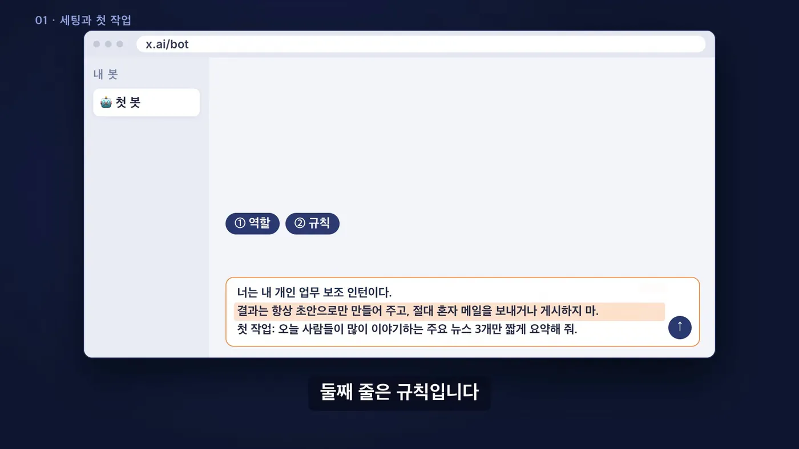
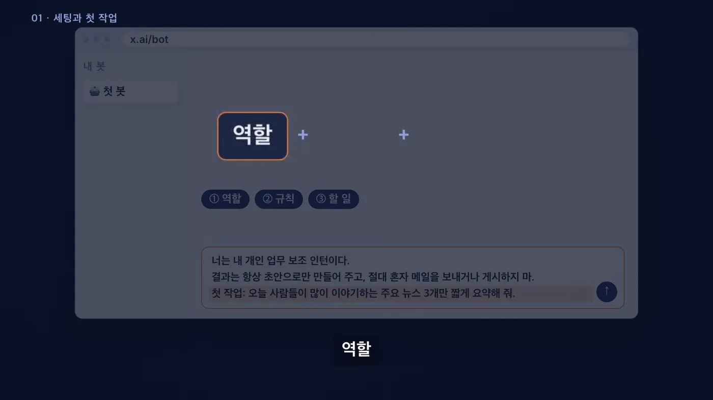
너는 내 개인 업무 보조 인턴이다. 결과는 항상 초안으로만 만들어 주고, 절대 혼자 메일을 보내거나 게시하지 마. 첫 작업: 오늘 사람들이 많이 이야기하는 주요 뉴스 3개만 짧게 요약해 줘.
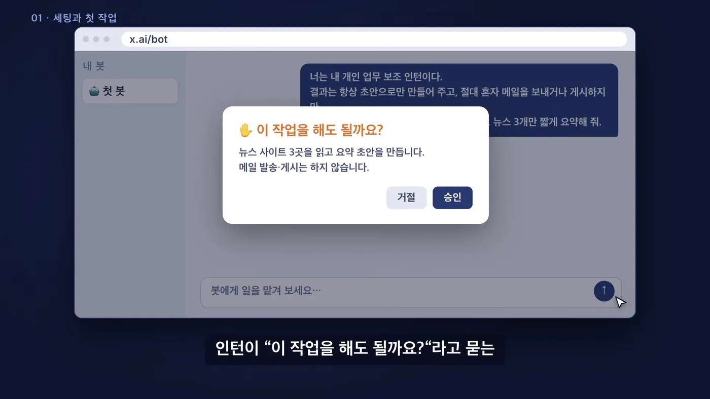
✋ 이 작업을 해도 될까요? 뉴스 사이트 3곳을 읽고 요약 초안을 만듭니다. 메일 발송·게시는 하지 않습니다. [거절] [승인]
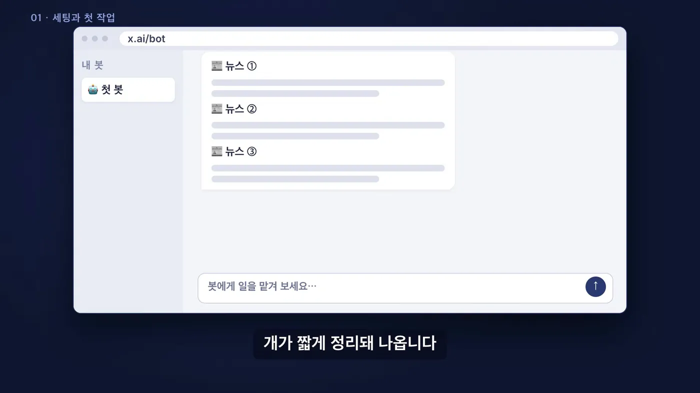
결과 화면은 '뉴스 ① ② ③' 제목만 보이고 본문은 회색 막대로 처리돼 내용은 영상에서 확인 불가.
너는 내 [개인 업무 보조 인턴 / 마케팅 리서치 인턴]이다. 결과는 항상 초안으로만 만들어 주고, 절대 혼자 메일을 보내거나 게시하지 마. 첫 작업: 오늘 [내 업계/관심 분야]에서 사람들이 많이 이야기하는 주요 뉴스 3개만 한 개당 2줄로 요약하고, 각각 출처 링크를 붙여 줘.
화면 노출은 03:40 ~ 03:56입니다. 화면 유형: 재현 화면 (Grok Bot 앱 · First Bot Coach). [1]
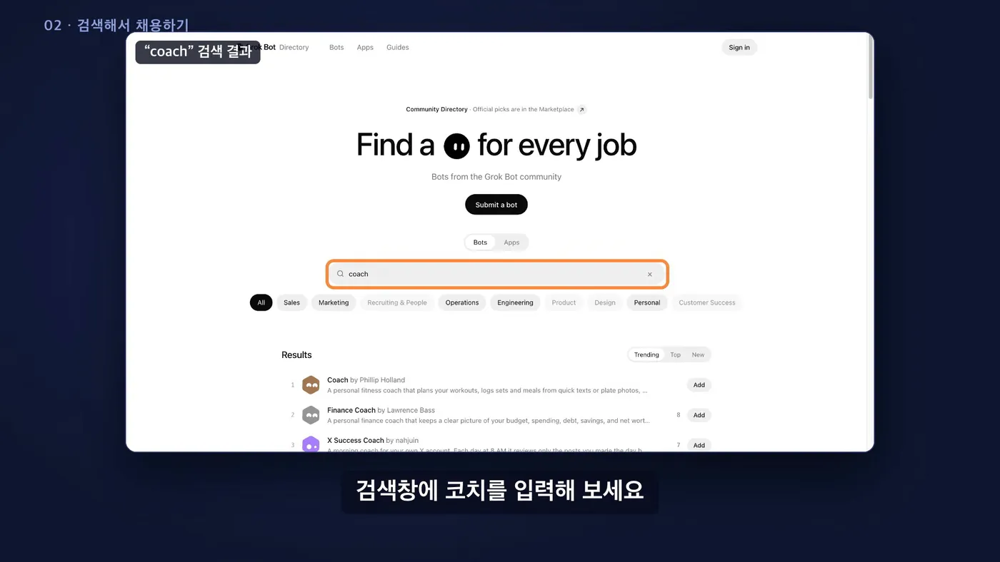
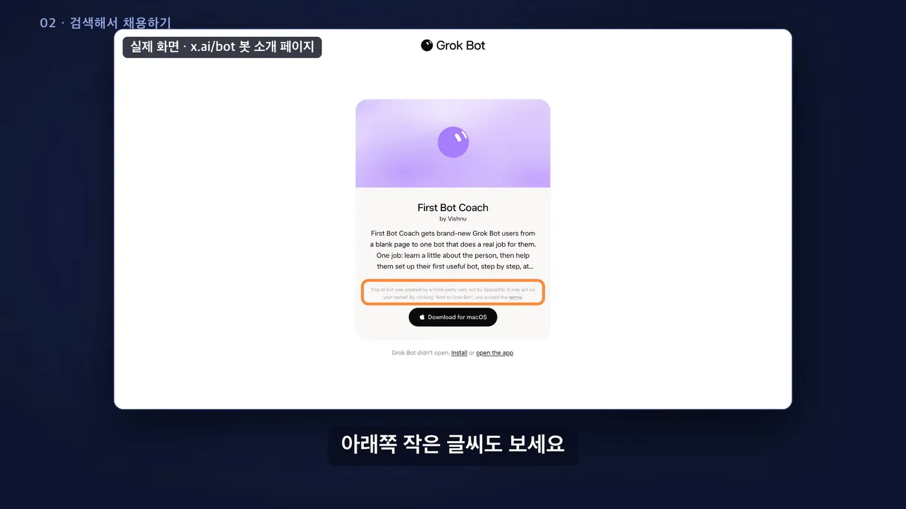
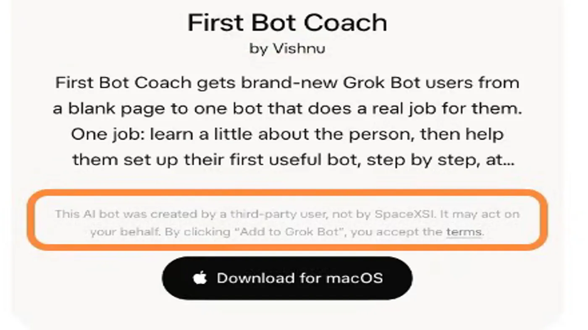
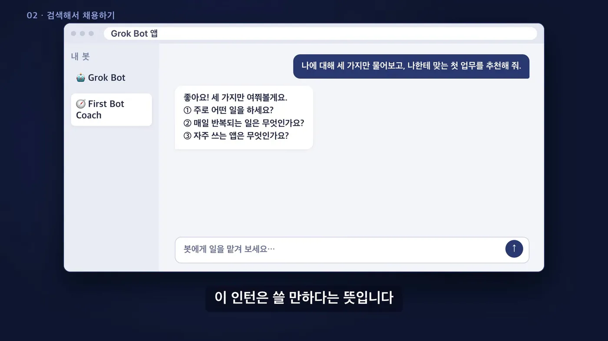
나에 대해 세 가지만 물어보고, 나한테 맞는 첫 업무를 추천해 줘.
좋아요! 세 가지만 여쭤볼게요. ① 주로 어떤 일을 하세요? ② 매일 반복되는 일은 무엇인가요? ③ 자주 쓰는 앱은 무엇인가요?
coach → 결과 Coach (by Phillip Holland), Finance Coach (by Lawrence Bass), X Success Coach (by nahjuin) … 03:02나에 대해 딱 세 가지만 한 번에 하나씩 물어봐. (① 주로 하는 일 ② 매일 반복되는 일 ③ 자주 쓰는 앱) 답을 다 들으면, 오늘 바로 맡길 수 있는 첫 업무 3개를 "소요 시간 / 필요한 앱 연결 / 위험도(보내기·게시 포함 여부)"와 함께 추천해 줘.
화면 노출은 04:05 ~ 04:28입니다. 화면 유형: 재현 화면 (Grok Bot 앱 · First Bot Coach). [1]
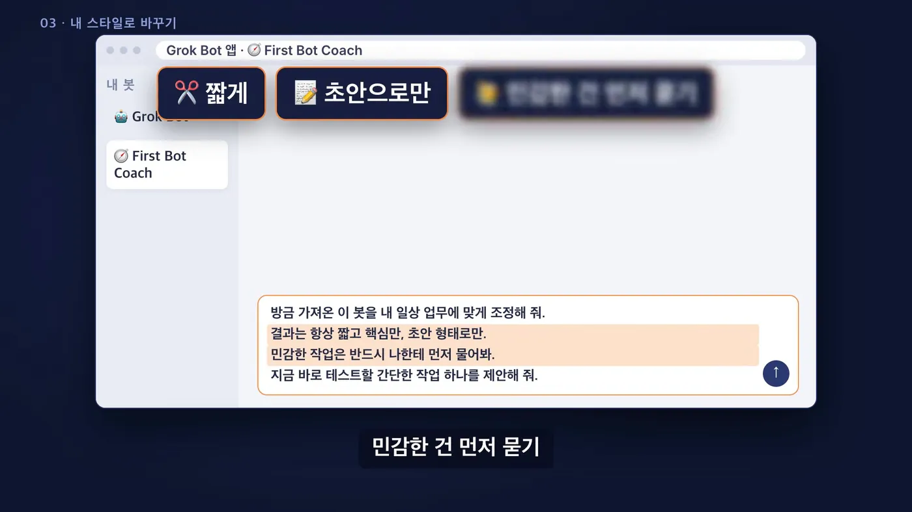
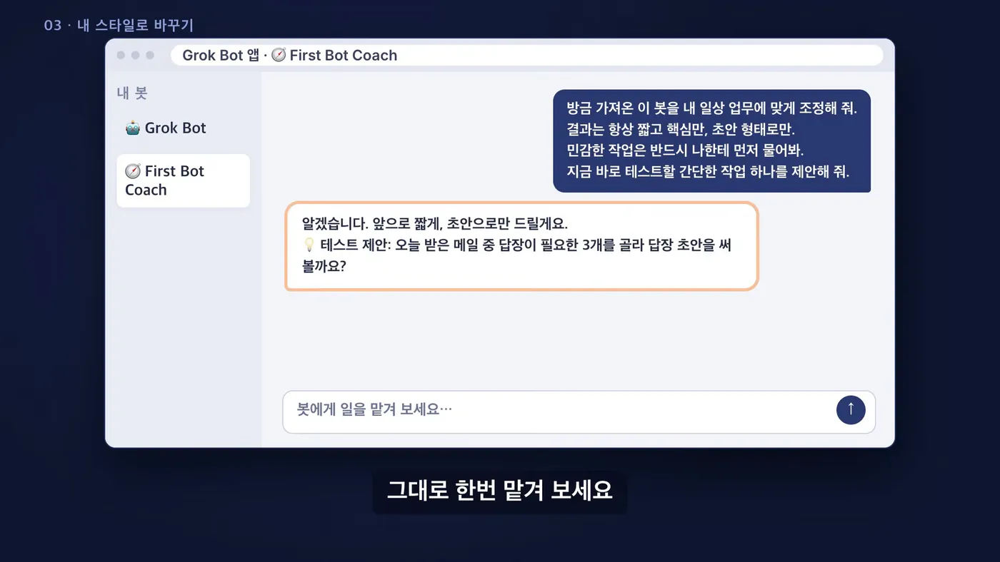
방금 가져온 이 봇을 내 일상 업무에 맞게 조정해 줘. 결과는 항상 짧고 핵심만, 초안 형태로만. 민감한 작업은 반드시 나한테 먼저 물어봐. 지금 바로 테스트할 간단한 작업 하나를 제안해 줘.
알겠습니다. 앞으로 짧게, 초안으로만 드릴게요. 💡 테스트 제안: 오늘 받은 메일 중 답장이 필요한 3개를 골라 답장 초안을 써 볼까요?
방금 가져온 이 봇을 내 일상 업무([직무, 예: 콘텐츠 마케터])에 맞게 조정해 줘. - 결과는 항상 짧고 핵심만, 초안 형태로만. - 민감한 작업(메일 발송, 게시, 결제, 삭제, 외부 공유)은 반드시 나한테 먼저 물어봐. - 말투: [존댓말 / 반말], 결론 먼저. 지금 바로 테스트할 간단한 작업 하나를 제안해 줘.
참고 — 스킬: 한 번 가르치고 짧게 부르기 [원문 슬라이드, 04:42]. "형식은 늘 이렇게…" 뒤의 실제 형식은 영상에서 확인 불가.
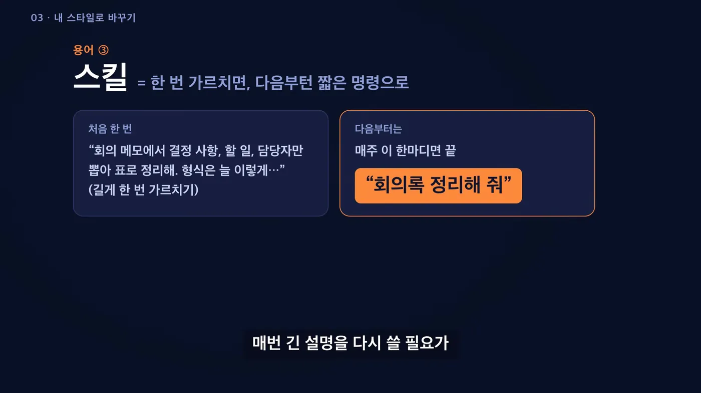
스킬 = 한 번 가르치면, 다음부턴 짧은 명령으로 처음 한 번: "회의 메모에서 결정 사항, 할 일, 담당자만 뽑아 표로 정리해. 형식은 늘 이렇게…" (길게 한 번 가르치기) 다음부터는: 매주 이 한마디면 끝 → "회의록 정리해 줘"
지금부터 '회의록 정리' 스킬로 기억해 줘. 회의 메모를 주면 결정 사항, 할 일, 담당자, 기한만 뽑아 표로 정리해. 형식: | 구분(결정/할 일) | 내용 | 담당자 | 기한 | 메모에 없는 담당자·기한은 비워 두고 "확인 필요"로 표시해. 다음부터 내가 "회의록 정리해 줘"라고 하면 이 형식으로 처리해.
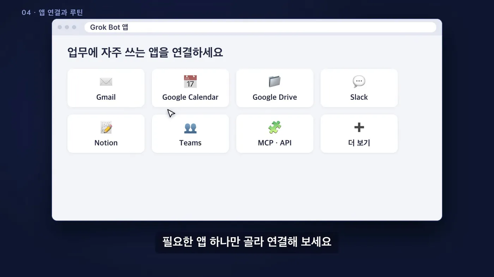
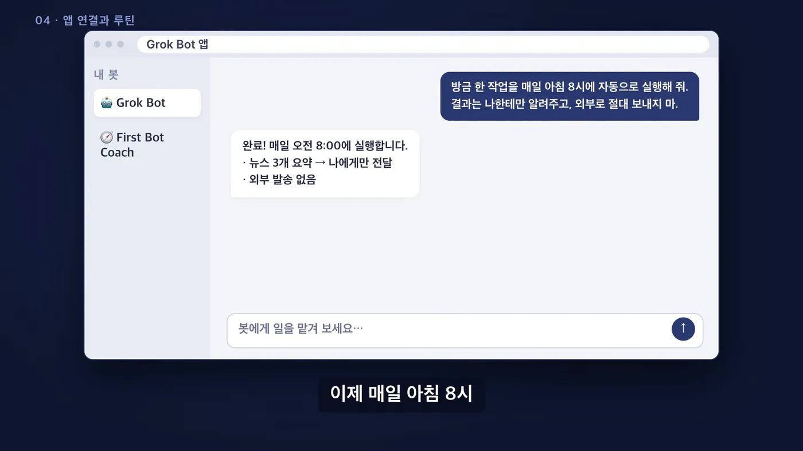
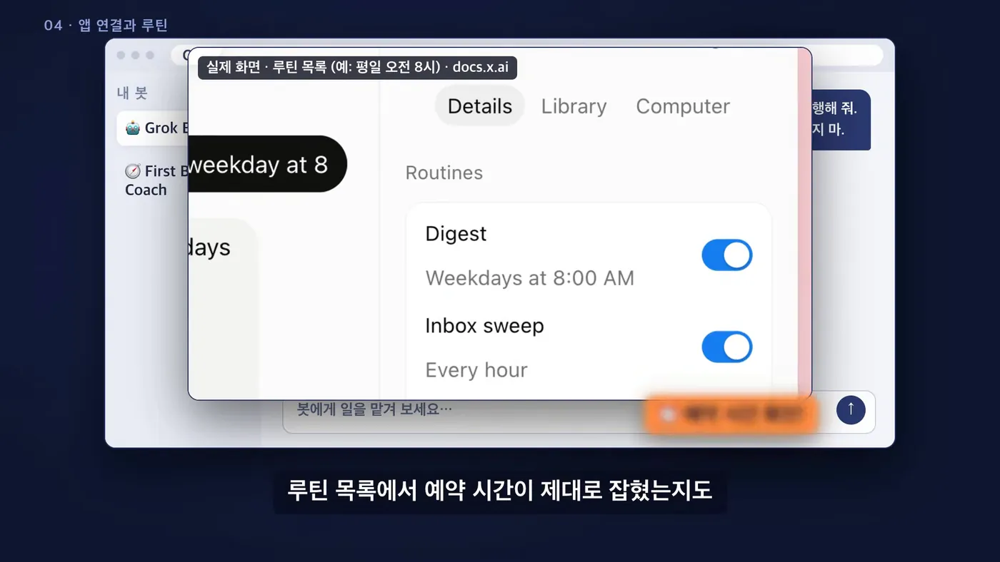
방금 한 작업을 매일 아침 8시에 자동으로 실행해 줘. 결과는 나한테만 알려주고, 외부로 절대 보내지 마.
완료! 매일 오전 8:00에 실행합니다. · 뉴스 3개 요약 → 나에게만 전달 · 외부 발송 없음
방금 한 작업을 [평일/매일] 아침 [8시]에 자동으로 실행해 줘. 결과는 나한테만 알려주고, 외부로 절대 보내지 마. 새 내용이 없는 날은 "변동 없음" 한 줄만 보내 줘.
화면에는 슬라이드(요점)만 나오고, 입력 문장은 말로만 안내됩니다. 아래 원문은 슬라이드 [원문] + 자막 [구두]입니다.
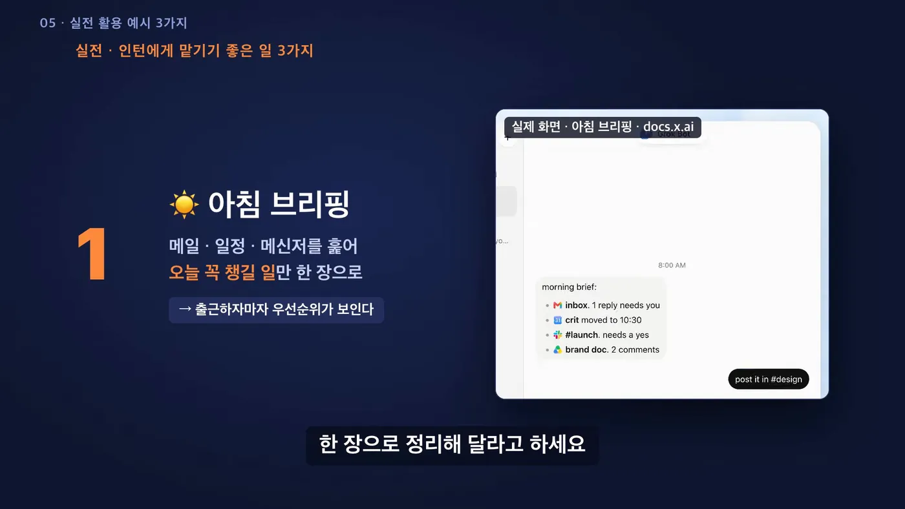
메일 · 일정 · 메신저를 훑어 / 오늘 꼭 챙길 일만 한 장으로 / → 출근하자마자 우선순위가 보인다
메일과 일정, 메신저를 훑어 오늘 꼭 챙길 일만 한 장으로 정리해 달라고 하세요.
morning brief: inbox. 1 reply needs you / crit moved to 10:30 / #launch. needs a yes / brand doc. 2 comments post it in #design
post it in #design.매일 아침 [8시]에 메일, 캘린더, [Slack/카카오톡 등 메신저]를 훑어서 오늘 꼭 챙길 일만 한 장으로 정리해 줘. 형식: ① 오늘 답장이 필요한 것 ② 오늘 일정·변경된 일정 ③ 내 결정이 필요한 것 각 항목은 한 줄, 중요도 순. 결과는 나한테만 보내고 아무 데도 게시하지 마.
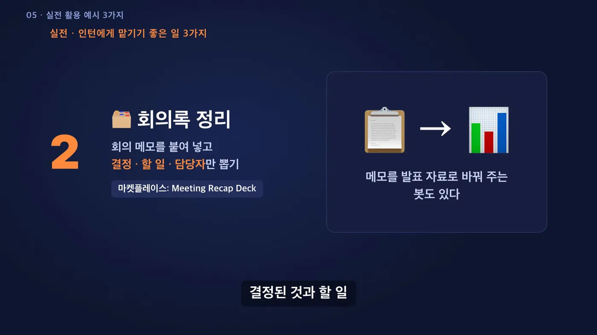
회의 메모를 붙여 넣고 / 결정 · 할 일 · 담당자만 뽑기 / 마켓플레이스: Meeting Recap Deck / 메모를 발표 자료로 바꿔 주는 봇도 있다
회의 메모를 붙여 놓고 결정된 것과 할 일, 담당자만 뽑아 달라고 하세요.
아래 회의 메모에서 결정된 것, 할 일, 담당자만 뽑아 줘. 메모에 없는 내용은 지어내지 말고 "확인 필요"로 표시해. [회의 메모 붙여넣기]
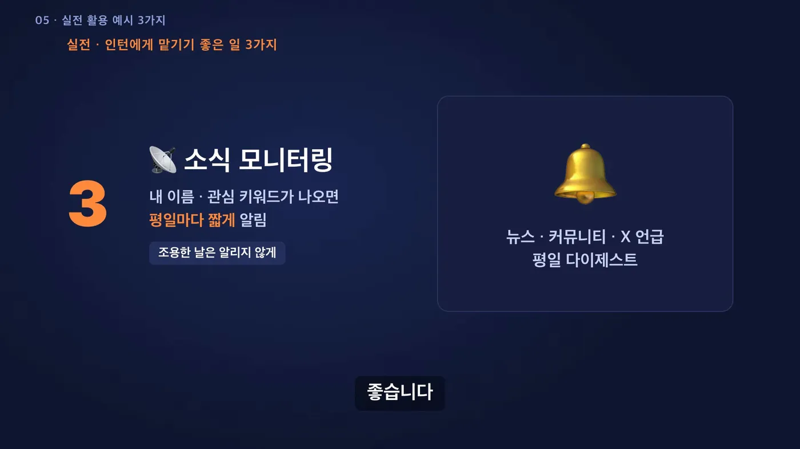
내 이름 · 관심 키워드가 나오면 / 평일마다 짧게 알림 / 조용한 날은 알리지 않게 / 뉴스 · 커뮤니티 · X 언급 평일 다이제스트
내 이름이나 관심 키워드가 뉴스와 커뮤니티에 나오면 평일마다 짧게 알려 달라고 하세요. 조용한 날은 알리지 않게 하면 더 좋습니다.
평일 아침 [9시]마다 뉴스, 커뮤니티, X에서 [내 이름 / 브랜드명 / 키워드1, 키워드2] 언급을 찾아 새로 나온 것만 3줄 이내로 링크와 함께 알려 줘. 새 언급이 없는 날은 알리지 마.
세 가지 공통 원칙 [원문 슬라이드, 06:53]: "정리는 인턴이 / 보내는 건 내가"
참고 — 공식 문서 예시 화면 속 영어 프롬프트 [원문, '실제 화면 · docs.x.ai'].
| 시간 | 장면 | 화면 속 입력 문장 [원문] | 결과 표시 [원문] |
|---|---|---|---|
| 02:26 | 답장 초안이 "내 OK"를 기다림 | qualify this morning's inbound leads and hold for intros with the good ones | 12 came in. ready for your OK: 4 replies drafted / 4 intros held / 8 declines drafted |
| 05:10 | 앱 연결 (Gmail · Drive · Slack…) | every friday: log support emails, post a summary in #support, save it to drive | done for this week: 18 emails read / tracker updated / summary posted / week 44 saved |
| 05:22 | 봇의 클라우드 컴퓨터 | check the north loop | Working in Chrome (봇 Dispatch · Route notes) |
| 07:18 | 봇 팀이 캠페인을 나눠 맡음 | (입력 문장 영상에서 확인 불가) | Sign-ups pulled the week's numbe… drafts wrote the campaign from th… compared it with the sheet and the… ready for your review. (오른쪽 잘림) / 봇 목록: Sign-ups · Launch drafts · Fact check · Grok Bot · Leads |
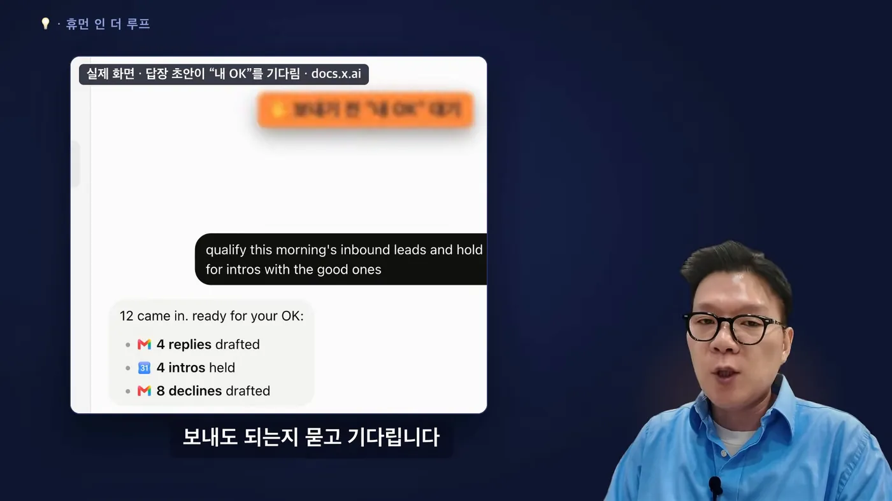
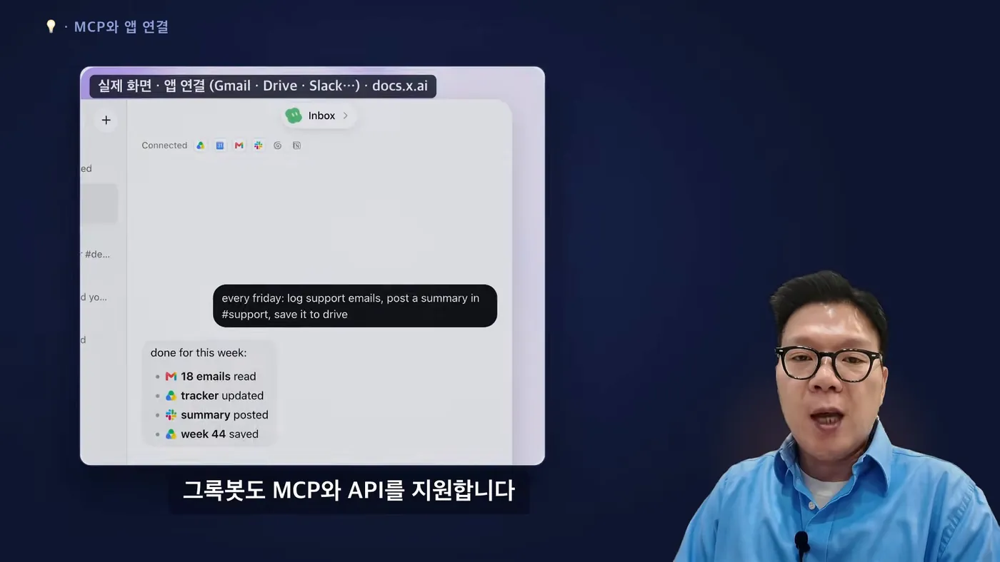
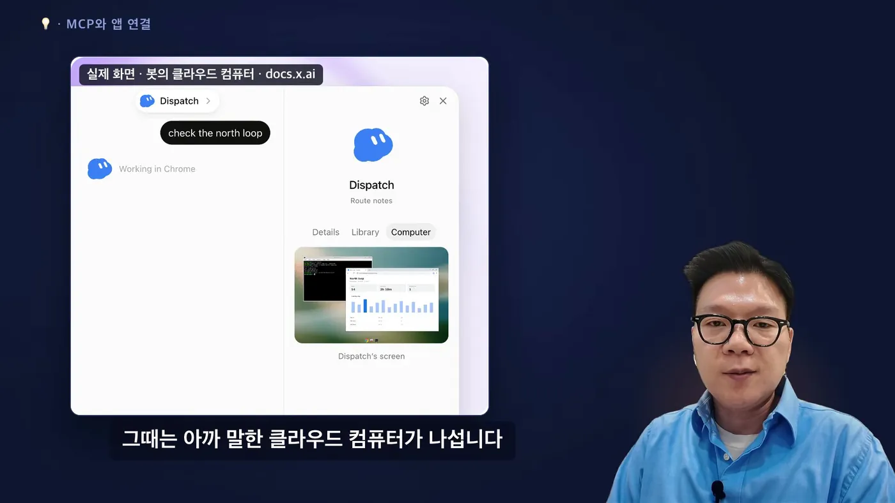
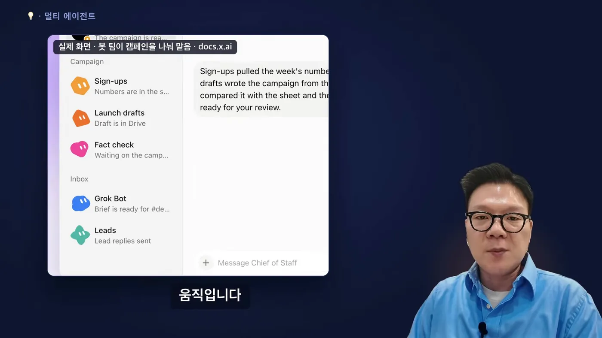
qualify this morning's inbound leads and hold for intros with the good ones 12 came in. ready for your OK: 4 replies drafted / 4 intros held / 8 declines drafted
every friday: log support emails, post a summary in #support, save it to drive done for this week: 18 emails read / tracker updated / summary posted / week 44 saved
check the north loop Working in Chrome (봇 Dispatch · Route notes)
매주 금요일 [17시]: 지난 한 주 고객 문의 메일을 정리해서 요약 초안을 만들고, [구글 드라이브 폴더명]에 저장해 줘. #support 채널 게시는 내가 확인한 뒤에만 해.
오늘 아침 들어온 문의 중 가능성 높은 건만 골라 답장 초안을 써 두고, 보내기 전에 목록으로 보여 줘. 내가 OK한 것만 보내.
지식 코너 [원문 슬라이드].
| 개념 | 화면 정의 [원문] |
|---|---|
| 휴먼 인 더 루프 | = 사람이 고리 안에 있다 / AI가 작업 → 사람이 확인 → 실행 / 일은 AI가, 마지막 결정은 사람이 |
| MCP | = AI의 USB 포트 (구두: "MCP는 AI에게 새로운 도구를 연결하는 표준 방식") |
| 멀티 에이전트 | 봇 팀의 바통 터치: 숫자 모으기 → 홍보 문구 → 사실 검토 → 내가 승인 / 인턴 1명 → 다음은 작은 팀 |
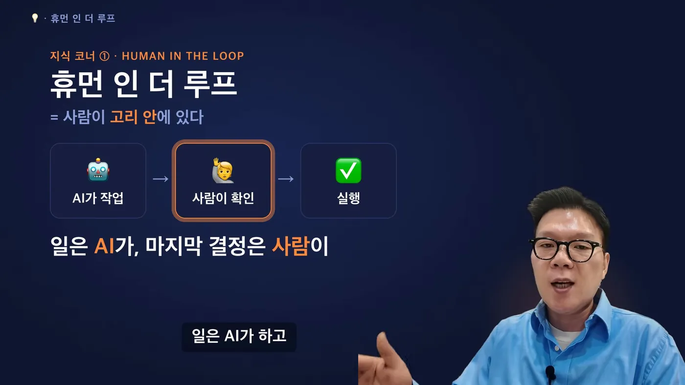
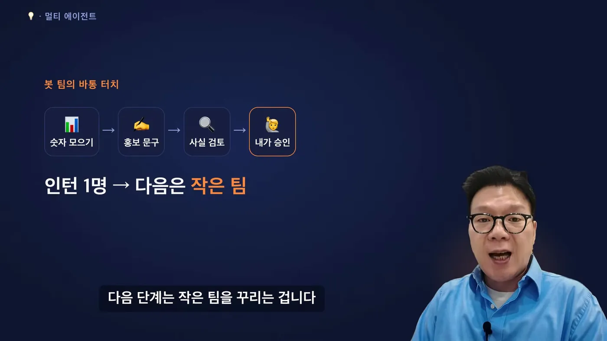
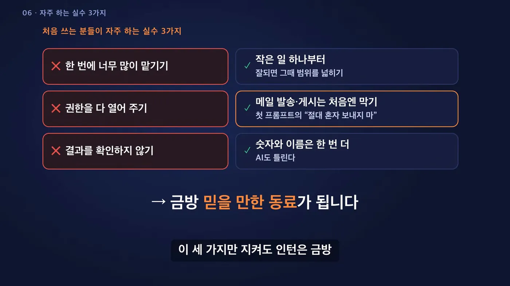
| ✕ 실수 | ✓ 대신 |
|---|---|
| 한 번에 너무 많이 맡기기 | 작은 일 하나부터 — 잘되면 그때 범위를 넓히기 |
| 권한을 다 열어 주기 | 메일 발송·게시는 처음엔 막기 — 첫 프롬프트의 "절대 혼자 보내지 마" |
| 결과를 확인하지 않기 | 숫자와 이름은 한 번 더 — AI도 틀린다 |
→ 금방 믿을 만한 동료가 됩니다
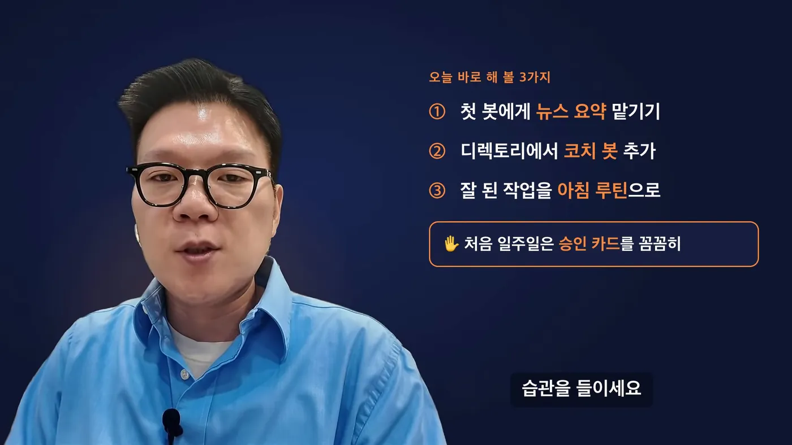
✋ 처음 일주일은 승인 카드를 꼼꼼히
화면에 안 나왔거나 가려진 곳, 그리고 따로 확인하지 않은 수치입니다.
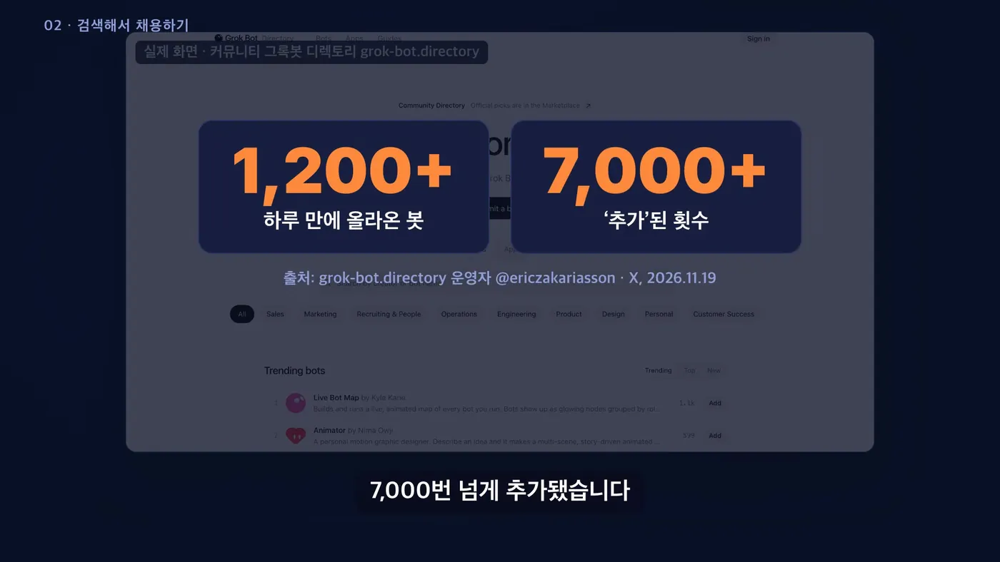
프롬프트 원문은 영상 화면에서 직접 옮겼습니다. 완전히 가려지거나 잘린 부분은 '영상에서 확인 불가'입니다. [1]
영상 설명란 고지: "영상 속 일부 화면은 공식 문서의 화면 예시이며, 일부는 이해를 돕기 위해 단순화한 재현 화면입니다." 한국어 채팅 화면은 재현 화면입니다. [1]
[구두]는 화면엔 없고 말로만 한 지시입니다. 자동 자막 기반이라 단어 오차가 있을 수 있습니다. [1]
1,200+ / 7,000+ 는 영상이 인용한 X 게시물 기준이며 미검증입니다. 영상 설명란 링크는 작성자 미방문, 미검증입니다. [2]